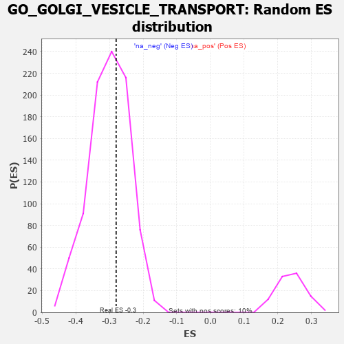

| | | Dataset | 7d |
| Phenotype | NoPhenotypeAvailable |
| Upregulated in class | na_neg |
| GeneSet | GO_GOLGI_VESICLE_TRANSPORT |
| Enrichment Score (ES) | -0.2802711 |
| Normalized Enrichment Score (NES) | -0.930119 |
| Nominal p-value | 0.6053215 |
| FDR q-value | 0.92711914 |
| FWER p-Value | 1.0 |
Table: GSEA Results Summary
 Fig 1: Enrichment plot: GO_GOLGI_VESICLE_TRANSPORT
Fig 1: Enrichment plot: GO_GOLGI_VESICLE_TRANSPORT
Profile of the Running ES Score & Positions of GeneSet Members on the Rank Ordered List
| PROBE | GENE SYMBOL | GENE_TITLE | RANK IN GENE LIST | RANK METRIC SCORE | RUNNING ES | CORE ENRICHMENT | | 1 | KLC2 | | | 238 | 0.951 | -0.0099 | No |
| 2 | NSF | | | 243 | 0.947 | 0.0099 | No |
| 3 | CNST | | | 317 | 0.792 | 0.0176 | No |
| 4 | KIF23 | | | 522 | 0.622 | 0.0050 | No |
| 5 | STX17 | | | 940 | 0.497 | -0.0375 | No |
| 6 | RINT1 | | | 1110 | 0.462 | -0.0491 | No |
| 7 | ATP9B | | | 1139 | 0.456 | -0.0429 | No |
| 8 | VPS54 | | | 1148 | 0.454 | -0.0341 | No |
| 9 | COG6 | | | 1365 | 0.416 | -0.0527 | No |
| 10 | EXOC1 | | | 1403 | 0.409 | -0.0486 | No |
| 11 | YIPF5 | | | 1406 | 0.409 | -0.0401 | No |
| 12 | COPZ1 | | | 1613 | 0.372 | -0.0584 | No |
| 13 | COPB2 | | | 1687 | 0.359 | -0.0600 | No |
| 14 | HYOU1 | | | 1692 | 0.358 | -0.0528 | No |
| 15 | COPA | | | 1806 | 0.336 | -0.0600 | No |
| 16 | UVRAG | | | 1831 | 0.332 | -0.0559 | No |
| 17 | CUL3 | | | 1893 | 0.321 | -0.0568 | No |
| 18 | COG2 | | | 1911 | 0.319 | -0.0521 | No |
| 19 | EXOC2 | | | 1927 | 0.317 | -0.0472 | No |
| 20 | ZW10 | | | 1973 | 0.309 | -0.0463 | No |
| 21 | MCFD2 | | | 1975 | 0.309 | -0.0398 | No |
| 22 | DCTN6 | | | 1999 | 0.305 | -0.0362 | No |
| 23 | GOSR2 | | | 2050 | 0.298 | -0.0361 | No |
| 24 | MON2 | | | 2057 | 0.298 | -0.0305 | No |
| 25 | USE1 | | | 2079 | 0.294 | -0.0269 | No |
| 26 | CENPE | | | 2086 | 0.293 | -0.0214 | No |
| 27 | RAB6B | | | 2133 | 0.286 | -0.0211 | No |
| 28 | CNIH1 | | | 2159 | 0.283 | -0.0182 | No |
| 29 | NBAS | | | 2299 | 0.260 | -0.0303 | No |
| 30 | SEC13 | | | 2330 | 0.256 | -0.0286 | No |
| 31 | COG7 | | | 2371 | 0.250 | -0.0283 | No |
| 32 | TMED7 | | | 2478 | 0.230 | -0.0369 | No |
| 33 | COPE | | | 2542 | 0.221 | -0.0402 | No |
| 34 | COG8 | | | 2564 | 0.218 | -0.0382 | No |
| 35 | YKT6 | | | 2571 | 0.217 | -0.0343 | No |
| 36 | DCTN3 | | | 2731 | 0.193 | -0.0504 | No |
| 37 | LMAN1 | | | 2743 | 0.192 | -0.0477 | No |
| 38 | SCFD1 | | | 2783 | 0.185 | -0.0487 | No |
| 39 | COPG2 | | | 2859 | 0.173 | -0.0545 | No |
| 40 | TMED5 | | | 2877 | 0.170 | -0.0530 | No |
| 41 | GOSR1 | | | 2940 | 0.159 | -0.0575 | No |
| 42 | RAB10 | | | 2952 | 0.157 | -0.0555 | No |
| 43 | KIF4B | | | 2965 | 0.155 | -0.0537 | No |
| 44 | PROS1 | | | 3070 | 0.141 | -0.0640 | No |
| 45 | STX6 | | | 3087 | 0.138 | -0.0630 | No |
| 46 | TMED4 | | | 3106 | 0.136 | -0.0624 | No |
| 47 | SCYL1 | | | 3172 | 0.126 | -0.0680 | No |
| 48 | AP1G1 | | | 3210 | 0.121 | -0.0701 | No |
| 49 | BET1L | | | 3224 | 0.118 | -0.0692 | No |
| 50 | TFG | | | 3243 | 0.114 | -0.0691 | No |
| 51 | RAB8A | | | 3319 | 0.102 | -0.0764 | No |
| 52 | COG3 | | | 3412 | 0.088 | -0.0863 | No |
| 53 | YIF1B | | | 3514 | 0.075 | -0.0975 | No |
| 54 | EXOC5 | | | 3574 | 0.064 | -0.1037 | No |
| 55 | COG4 | | | 3608 | 0.058 | -0.1066 | No |
| 56 | DCTN5 | | | 3665 | 0.049 | -0.1127 | No |
| 57 | VPS52 | | | 3758 | 0.033 | -0.1237 | No |
| 58 | CEP19 | | | 3778 | 0.031 | -0.1255 | No |
| 59 | SPAST | | | 3801 | 0.027 | -0.1277 | No |
| 60 | BET1 | | | 3817 | 0.025 | -0.1291 | No |
| 61 | GGA1 | | | 3952 | 0.002 | -0.1461 | No |
| 62 | STX18 | | | 3962 | 0.000 | -0.1472 | No |
| 63 | SYS1 | | | 4038 | -0.014 | -0.1565 | No |
| 64 | DCTN4 | | | 4052 | -0.016 | -0.1578 | No |
| 65 | COG1 | | | 4079 | -0.020 | -0.1607 | No |
| 66 | KIF15 | | | 4106 | -0.024 | -0.1635 | No |
| 67 | EXOC8 | | | 4120 | -0.026 | -0.1646 | No |
| 68 | VPS51 | | | 4137 | -0.030 | -0.1660 | No |
| 69 | EXOC4 | | | 4182 | -0.039 | -0.1708 | No |
| 70 | GBF1 | | | 4215 | -0.044 | -0.1739 | No |
| 71 | VTI1A | | | 4224 | -0.046 | -0.1739 | No |
| 72 | GAK | | | 4249 | -0.050 | -0.1759 | No |
| 73 | NRBP2 | | | 4274 | -0.055 | -0.1778 | No |
| 74 | SAR1A | | | 4304 | -0.060 | -0.1802 | No |
| 75 | ARF4 | | | 4383 | -0.073 | -0.1886 | No |
| 76 | STX5 | | | 4400 | -0.077 | -0.1890 | No |
| 77 | KIF3B | | | 4450 | -0.085 | -0.1934 | No |
| 78 | LRRK2 | | | 4467 | -0.087 | -0.1935 | No |
| 79 | KLC1 | | | 4697 | -0.139 | -0.2197 | No |
| 80 | RAB14 | | | 4784 | -0.155 | -0.2274 | No |
| 81 | MYO5A | | | 4787 | -0.155 | -0.2243 | No |
| 82 | USO1 | | | 4855 | -0.168 | -0.2292 | No |
| 83 | COG5 | | | 4895 | -0.176 | -0.2304 | No |
| 84 | VAMP8 | | | 4905 | -0.179 | -0.2277 | No |
| 85 | CAPZB | | | 4908 | -0.179 | -0.2241 | No |
| 86 | SNX2 | | | 4966 | -0.191 | -0.2273 | No |
| 87 | RER1 | | | 5139 | -0.235 | -0.2442 | No |
| 88 | LMAN2 | | | 5155 | -0.238 | -0.2409 | No |
| 89 | DCTN2 | | | 5175 | -0.243 | -0.2382 | No |
| 90 | PICK1 | | | 5265 | -0.263 | -0.2438 | No |
| 91 | CUX1 | | | 5437 | -0.304 | -0.2591 | No |
| 92 | KIF3A | | | 5480 | -0.313 | -0.2577 | No |
| 93 | KIF2A | | | 5511 | -0.322 | -0.2546 | No |
| 94 | MPPE1 | | | 5694 | -0.372 | -0.2698 | No |
| 95 | VAMP7 | | | 5777 | -0.399 | -0.2717 | Yes |
| 96 | LAMP1 | | | 5796 | -0.404 | -0.2653 | Yes |
| 97 | RAB13 | | | 5870 | -0.425 | -0.2655 | Yes |
| 98 | VAPA | | | 5939 | -0.449 | -0.2645 | Yes |
| 99 | DCTN1 | | | 5950 | -0.454 | -0.2561 | Yes |
| 100 | SURF4 | | | 5951 | -0.455 | -0.2463 | Yes |
| 101 | PGAP1 | | | 5958 | -0.457 | -0.2372 | Yes |
| 102 | SCAP | | | 5986 | -0.466 | -0.2307 | Yes |
| 103 | GCC2 | | | 5994 | -0.470 | -0.2214 | Yes |
| 104 | VAMP3 | | | 6043 | -0.487 | -0.2171 | Yes |
| 105 | GOPC | | | 6167 | -0.528 | -0.2214 | Yes |
| 106 | AP3D1 | | | 6261 | -0.558 | -0.2213 | Yes |
| 107 | BBS2 | | | 6383 | -0.608 | -0.2237 | Yes |
| 108 | BBS1 | | | 6397 | -0.616 | -0.2121 | Yes |
| 109 | CSK | | | 6428 | -0.630 | -0.2024 | Yes |
| 110 | ARL1 | | | 6438 | -0.636 | -0.1899 | Yes |
| 111 | VAMP2 | | | 6525 | -0.672 | -0.1864 | Yes |
| 112 | CLN3 | | | 6580 | -0.699 | -0.1783 | Yes |
| 113 | ARF1 | | | 6583 | -0.701 | -0.1635 | Yes |
| 114 | TMED2 | | | 6665 | -0.746 | -0.1578 | Yes |
| 115 | SNX3 | | | 6934 | -0.893 | -0.1727 | Yes |
| 116 | ARL3 | | | 7041 | -0.963 | -0.1656 | Yes |
| 117 | RAB1A | | | 7096 | -0.993 | -0.1511 | Yes |
| 118 | ANK2 | | | 7298 | -1.170 | -0.1516 | Yes |
| 119 | VAPB | | | 7482 | -1.378 | -0.1453 | Yes |
| 120 | PDCD6 | | | 7630 | -1.615 | -0.1293 | Yes |
| 121 | ANK3 | | | 7690 | -1.740 | -0.0995 | Yes |
| 122 | PLPP3 | | | 7740 | -1.876 | -0.0654 | Yes |
| 123 | ANK1 | | | 7815 | -2.146 | -0.0288 | Yes |
| 124 | GRIA1 | | | 7836 | -2.260 | 0.0172 | Yes |
Table: GSEA details [plain text format]

Fig 2: GO_GOLGI_VESICLE_TRANSPORT: Random ES distribution
Gene set null distribution of ES for GO_GOLGI_VESICLE_TRANSPORT